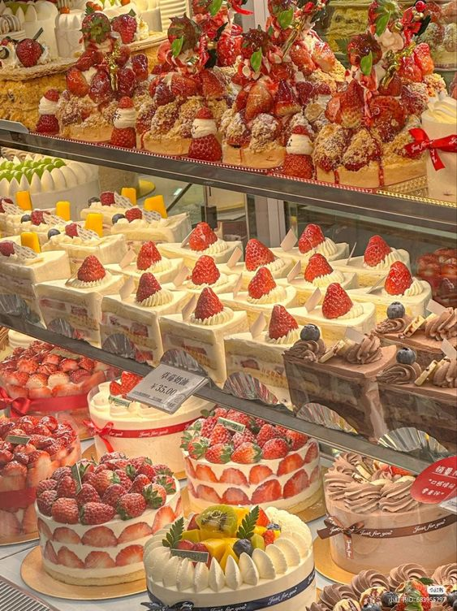
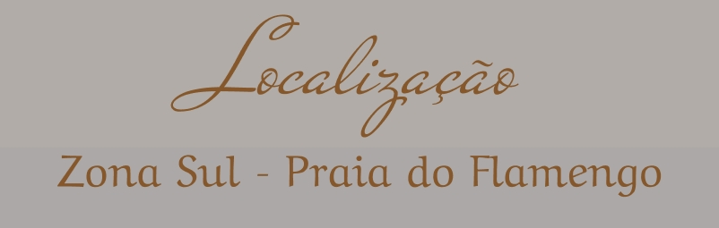

Deixe-se levar por uma experiência inesquecível em nossa cafeteria, onde cada gole é uma viagem nostalgica aos seus momentos mais especiais!
Uma cafeteria sustentável que prioriza o uso de alimentos cultivados no local, oferecendo um cardápio sazonal focado nos produtos da estação. Voltada para jovens e adultos, a cafeteria proporciona um ambiente aconchegante e calmo, ideal para saborear um café enquanto trabalham ou leem. Venha desfrutar de uma experiência única, onde cada gole reflete o cuidado com o meio ambiente e a qualidade dos ingredientes!
